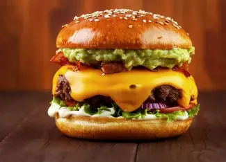

La hamburguesa nació en Estados Unidos a fines del siglo XIX y se convirtió en el símbolo de la comida rápida moderna. Una medallón de carne molida jugosa entre dos panes suaves, acompañada de lechuga, tomate, queso y salsas, es una combinación difícil de resistir.
Con el tiempo evolucionó mucho más allá del fast food: hoy existen hamburgueserías gourmet que utilizan cortes premium, panes brioche artesanales y combinaciones creativas de ingredientes. También surgieron versiones vegetales y veganas que replican la experiencia con sorprendente fidelidad.